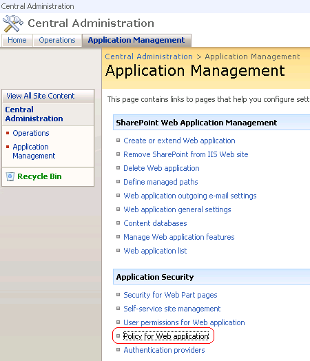
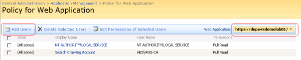
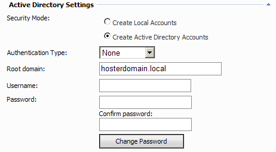
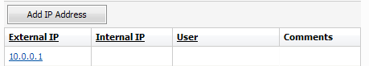
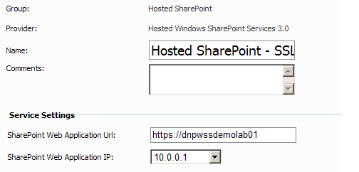
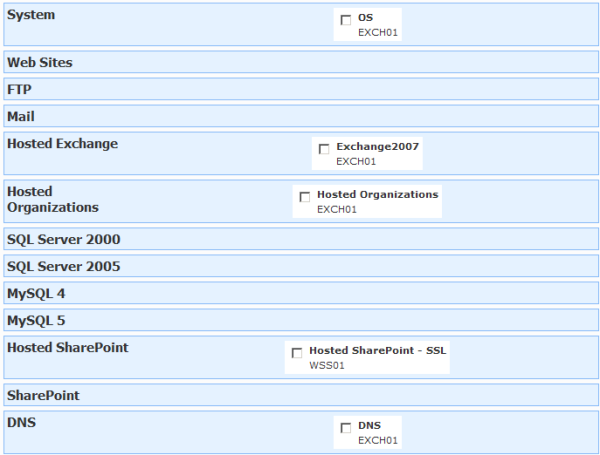
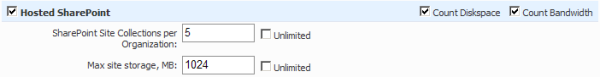
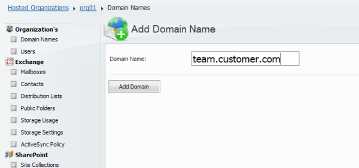
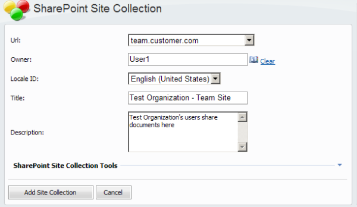

WSP Hosted SharePoint Solution Installation Tasks
Translations:
WSP Server account requirements
Group membership requirements for WSP Server Web site anonymous access and WSP Server application pool identity are the same as for WSP Server where Hosted Organizations module will be deployed (membership in "Domain Admins" AD group and "IIS_WPG" and "Administrators" local ones).
Membership in "Exchange Organization Administrators" is not needed. However in case you decide to reset all WSP Servers for HES, HSS and HO modules to the single account - it should be the member of "Exchange Organization Administrators" too.
Root Web Application level permissions should be added to this account too.
- On WSS front-end server you are going to manage with WSP open Administrative tools > SharePoint 3.0 Central Administration > Application Management > Application Security > Policy for Web application.

- Choose root Web Application you created previously from available Web Applications
- Press "Add Users"

- Press Next
- Add WSP Server account with Full Control permissions
- Press Finish
Please do not forget to restart WebsitePanel Server pool and web site after you added WSP Server account to appropriate groups and check pool identity and web site anonymous assess. Or you can simple run iisreset on this server if it is not in production.
Setting up "Active Directory Settings"
Requirements for "Active Directory Settings" for all WSP Servers where Hosted SharePoint module will be deployed are the same as for WSP Server where Hosted Organizations module will be deployed.

Setting up Hosted SharePoint Service
- Add External IP to server. It should be public IP external clients will connect to. In case if NAT-based infrastructure - add external IP of NAT server on which SharePoint will be published. This will be used for creating DNS records for Site Collections. Please add this address even you are not going to manage DNS with WSP.

- Add "OS" service to at least one server. If you are going to create Virtual Server and Hosting plan mixed with classic Web hosting - add "OS" service from WSP Server that will host websites. In case of pure WSS or mixed WSS/Exchange environment - use any server. Your customers may use their Hosting Space folders for Site collection's backup. So choose "Hosting Spaces Folder" path carefully (it should have enough free space, for example - point to physical disk where data files, not programs are located).
- Ensure that "Hosted Organizations" module is deployed on one of the WSP Servers.
On " Hosted SharePoint" service specify service settings:
- SharePoint Web Application Url. Enter "Root Web Application URL" you wrote down previously, "https://wspwssdemolab01/" in our example. Port number is omitted in this URL because it is standard for https. Please do not forget to enter port number in URL in case you use non-standard (not 80 or 443) port.
- SharePoint Web Application IP. Select server IP from drop-down.

- No need to adjust service DNS Zone Records. "SharePoint Web Application IP" setting do this job.
Creating Virtual Server
It is strongly recommended to use Virtual Servers, but not Servers for Hosting plans. This greatly increases flexibility and help you avoid many problems during adding services or resources to existing customers
- Select "Hosted SharePoint" server from WSS server you previously configured.
- Select "Hosted Organizations" service from server where you deployed it.
- Select "OS" service from any server. If you are going to create Virtual Server and Hosting plan mixed with classic Web hosting - use "OS" service only from Web server.
- Select"Exchange 2007" services from Exchange 2007 server with Mailbox role in case (more likely) you are going to use Hosted SharePoint and Exchange in one Hosting Plan or add Exchange features to customers later with Add-Ons.
- Optionally select other services like "Hosted CRM" or "Web" if you are going to use Hosted SharePoint and other services in one Hosting Plan or add other services to customers later with Add-Ons.
- Optionally select "DNS" service from appropriate server if you use WSP-managed DNS server.This service is not mandatory.

Creating Hosting Plan
In case you are creating mixed SharePoint/Exchange Hosting Plan, create plan according to this document and then add "Hosted SharePoint" component.
In case you are creating pure SharePoint Hosting Plan, anyway create plan according to this document, just do not add "Exchange 2007" component and add "Hosted SharePoint" component.

Additionally, adding "File Manager" option may make sense for Hosting Plan contained "Hosted SharePoint" component - it will allow customers to manipulate Site Collection's backup files.
Creating Site Collection
Here we assume that those steps are already done after creating Hosting Plan:
- WSP User created by hosting provider
- Hosting Space (based on previously created Hosting Plan) for this WSP User is created by hosting provider
- Hosted Organization inside this Hosting Space is created by hosting provider or by hosting customer
- At least one user (future SharePoint Site Collection owner) is created in Hosted Organization by hosting provider or by hosting customer
Here are steps hosting customers have to do to create SharePoint Site Collection:
- Decide what will be SharePoint Site Collection URL
- Create Domain Name the same as future SharePoint Site Collection URL, team.customer.com in our example.

- Go to SharePoint > Site Collections and press "Create New Site Collection" button.
On SharePoint Site Collection creation page specify the following settings:
- Url. Choose from drop-down. Temporary Hosted Organization domain name by default. We use previously created team.customer.com in our example.
- Owner. Choose who will be SharePoint Site Collection owner. Use Hosted Organization users list.
- Locale ID. Choose from drop-down. WSP reads available LCIDs (depends on language packs you deployed).
- Title. Fill the title.
- Description. Fill site description.

- Press "Add site collection".
Try to open Site Collection in browser.